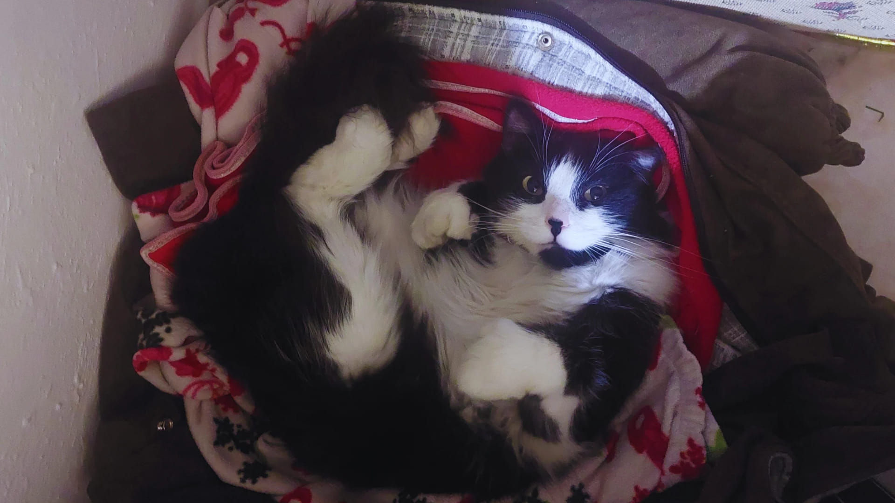

¡Hola! Quiero presentarles a mi hermoso compañero felino, Bundy. Con sus bigotes curiosos y su personalidad única, Bundy ha llenado mi hogar de alegría y diversión desde que llegó a mi vida.
En esta página, compartiré con ustedes un poco sobre todo lo especial que hace a Bundy ser quién es. Desde sus siestas en los lugares más inesperados hasta sus juegos favoritos, conocerán por qué este pequeño felino se ha convertido en una parte tan importante de mi familia.

Cosas que ama Bundy
Dormir en cualquier lugar
Dormir en posiciones extrañas
Comer carne seca
Espiar a los vecinos
Seguirme a todos lados
Ventajas de tener un michi
Se ha comprobado que tener un gato reduce el estrés
Normalmente los dueños de gatos tienen una tensión arterial más baja que las personas sin mascotas
Puedes beneficiarte de un sistema inmunológico más fuerte y recuperarte de las enfermedades antes que las personas que no tienen animales de compañía
Los niños que crecen con gatos tienen menos días de enfermedad que aquellos que no tienen mascotas
Los gatos son muy cariñosos y tienen un gran carácter, pero también valoramos su independencia, es decir, necesitan menos cuidados que otras mascotas
Los gatos pueden ayudar a las personas a recuperarse más rápido de un trauma emocional, como el fallecimiento de un ser querido.